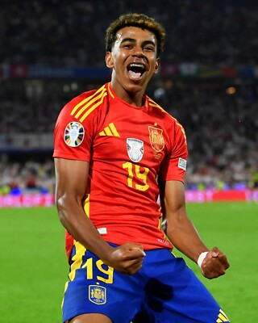

World Cup History
Spain's relationship with the FIFA World Cup is one of the most dramatic stories in football — decades of underachievement, followed by a golden era, followed by a new generation hungry to reclaim glory.
-
2010 — Champions
- Spain's golden generation won their first and only World Cup in South Africa
- Andrés Iniesta scored the winning goal in extra time against the Netherlands
- Part of an historic treble: Euro 2008, World Cup 2010, Euro 2012
-
2014 — Group Stage Exit
- Defending champions crashed out after losses to Netherlands (5-1) and Chile
- Signaled the end of the tiki-taka era
-
2018 — Round of 16
- Eliminated by host nation Russia on penalties
- Three different managers in the week before the tournament added chaos
-
2022 — Round of 16
- Lost to Morocco on penalties in Qatar
- Young stars like Pedri and Gavi showed promise for the future
-
2026 — Can They Reclaim It?
- Reigning Euro 2024 champions with the #1 FIFA ranking
- Best squad depth since the 2010 golden generation
- An 18-year-old superstar leading the charge
Watch: Spain's Euro 2024 Highlights
Relive the campaign that showed Spain is back as a world superpower — before they head into 2026.
Road to 2026
Spain qualified for the 2026 World Cup as winners of UEFA Group E — one of the most dominant qualifying campaigns in recent European history.
Spain topped UEFA Group E ahead of Turkey...
La Roja are chasing a second World Cup trophy in 2026.
Key Players
Spain's squad blends a generation of world-class young talent with experienced leaders. Here are the players to watch at the 2026 World Cup.

Lamine Yamal
Right Winger · FC Barcelona
At just 18 years old, Yamal is already considered one of the best players on the planet. He finished runner-up for the 2025 Ballon d'Or — the highest ever finish by a teenager — and scored one of Euro 2024's greatest goals in the semifinal against France. He will be 19 when the World Cup kicks off.
Rodri
Defensive Midfielder · Manchester City
The 2024 Ballon d'Or winner and the engine of Spain's midfield. Rodri was central to the Euro 2024 triumph and provides elite defensive coverage, distribution, and tactical discipline. He is the heartbeat of La Roja.
Pedri
Central Midfielder · FC Barcelona
A generational passer and ball-carrier, Pedri is the creative engine between the lines. Won the Euro 2020 Young Player of the Tournament and has been a fixture in the national team since breaking through at 18. His combination play with Yamal is a joy to watch.
Nico Williams
Left Winger · Athletic Bilbao
Explosive, fast, and direct — Nico Williams provides the perfect left-sided counterpart to Yamal on the right. His dribbling and link-up play were key to Spain's Euro 2024 run. Fitness will be closely monitored ahead of the tournament.
Mikel Oyarzabal
Striker · Real Sociedad
The man who scored the winning goal in the Euro 2024 final against England. Oyarzabal is calm, clinical, and intelligent — a striker who delivers on the biggest stages. Scored six goals in qualifying and is expected to lead the line at the World Cup.
Pau Cubarsi
Centre-Back · FC Barcelona
One of the most composed young defenders in world football. Cubarsi is only 17 years old but already commands the Barcelona and Spain backlines with remarkable authority. He is the foundation Spain's defence is built around heading into 2026.
2026 World Cup: UEFA Qualifying Stats
Explore group-by-group qualifying data from the UEFA path to the 2026 World Cup.